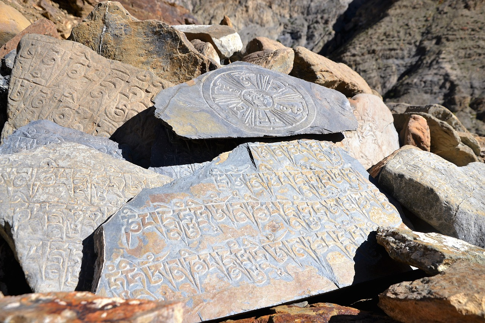

Southern Asian Calligraphy
Southern Asian calligraphy encompasses calligraphy from Tibet, India and Nepal. The most common calligraphy used for Buddhist texts is the Ranjana script. Most often this form of writing is seen on letters of the Dalai Lama.
Home
